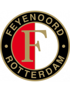
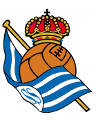
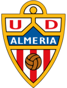
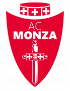
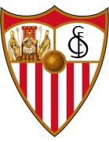
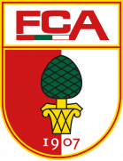
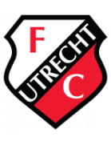
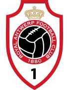

You are viewing Mar15-Mar17!
| Date | Fixture Bold-faced team is selected by AIGoalie to win. | Odds Pre-match odds of the selected team winning. | Confidence How confident AIGoalie is that the selected team will win. | Result Whether the selected team won, drew, or lost. | Alerts Home 🏥 = Considerable injuries 🏥🏥 = Major injuries 📉 = Dip in form Note, you may see injuries when expanding match but no alert here, meaning the model does not consider them important. |
Alerts Away 🏥 = Considerable injuries 🏥🏥 = Major injuries 📉 = Dip in form Note, you may see injuries when expanding match but no alert here, meaning the model does not consider them important. |
|
|---|---|---|---|---|---|---|---|
| Mar 17 | Sp Lisbon 6:1 Boavista Form: DWW Form: LDW |
2.7 vs -3.48 | 1.16 | 87.04% | 1 | 🏥 Home team has considerable injuries | 📉 Away team has a dip in form recently |
| Mar 16 | Porto 4:1 Vizela Form: DWW Form: DDW |
2.31 vs -2.85 | 1.16 | 83.14% | 1 | 📉 Away team has a dip in form recently | |
| Mar 16 | Darmstadt 2:5 Bayern Munich Form: DLL Form: WDW |
-3.27 vs 2.19 | 1.17 | 81.92% | 1 | 🏥🏥 📉 Home team has MAJOR injuries and a dip in form recently | 🏥 Away team has considerable injuries |
| Mar 17 | Casa Pia 0:1 Benfica Form: WDL Form: WLW |
-2.55 vs 1.99 | 1.33 | 79.93% | 1 | 📉 Home team has a dip in form recently | |
| Mar 16 | Anderlecht 0:1 Kortrijk Form: WWW Form: LWL |
1.88 vs -2.79 | 1.28 | 78.79% | 0 | 🏥 📉 Away team has considerable injuries and a dip in form recently | |
| Mar 16 | Man United postponed Sheffield United Form: LLW Form: LLD |
1.66 vs -2.43 | n/a | 76.58% | None | 🏥 📉 Home team has considerable injuries and a dip in form recently | 📉 Away team has a dip in form recently |
| Mar 17 | Inter 1:1 Napoli Form: WWW Form: WWD |
1.59 vs -2.26 | 1.69 | 75.89% | 0.5 | ||
| Mar 17 | Montpellier 2:6 Paris SG Form: LDW Form: DDD |
-2.48 vs 1.55 | 1.56 | 75.48% | 1 | 🏥 📉 Home team has considerable injuries and a dip in form recently | 🏥 📉 Away team has considerable injuries and a dip in form recently |
| Mar 17 | Kasimpasa 3:4 Galatasaray Form: LDW Form: WWW |
-2.61 vs 1.4 | 1.48 | 74.02% | 1 | 🏥🏥 📉 Home team has MAJOR injuries and a dip in form recently | 🏥🏥 Away team has MAJOR injuries |
| Mar 17 | PSV Eindhoven 1:0 Twente Form: WDW Form: WWW |
1.37 vs -2.09 | 1.42 | 73.71% | 1 | ||
| Mar 17 | Heerenveen 2:3  Feyenoord Form: WWL Form: WDW |
-2.08 vs 1.36 | 1.51 | 73.56% | 1 | 🏥 Away team has considerable injuries | |
| Mar 16 | Sp Braga 2:1 Gil Vicente Form: WWD Form: DDD |
1.36 vs -2.16 | 1.44 | 73.61% | 1 | 🏥 Home team has considerable injuries | 📉 Away team has a dip in form recently |
| Mar 17 | Freiburg 2:3 Leverkusen Form: LDW Form: WWW |
-2.04 vs 1.34 | 1.58 | 73.41% | 1 | 📉 Home team has a dip in form recently | |
| Mar 17 | Juventus 0:0 Genoa Form: WLD Form: WLL |
1.29 vs -2.03 | 1.55 | 72.87% | 0.5 | 📉 Home team has a dip in form recently | 📉 Away team has a dip in form recently |
| Mar 17 | Roma 1:0 Sassuolo Form: WWD Form: LLW |
1.26 vs -2.25 | 1.41 | 72.64% | 1 | 🏥🏥 Home team has MAJOR injuries | 📉 Away team has a dip in form recently |
| Mar 17 | Verona 1:3 Milan Form: LWW Form: DWW |
-1.78 vs 1.24 | 1.75 | 72.35% | 1 | ||
| Mar 15 | Sociedad  2:0 Cadiz Form: LLW Form: DDW |
1.19 vs -1.86 | 1.5 | 71.94% | 1 | 📉 Home team has a dip in form recently | 📉 Away team has a dip in form recently |
| Mar 17 | Brighton postponed Man City Form: DLW Form: WWD |
-1.96 vs 1.17 | n/a | 71.68% | None | 🏥 📉 Home team has considerable injuries and a dip in form recently | |
| Mar 16 | Osasuna 2:4 Real Madrid Form: DWL Form: WDW |
-2.3 vs 1.17 | 1.58 | 71.72% | 1 | 🏥🏥 📉 Home team has MAJOR injuries and a dip in form recently | 🏥 Away team has considerable injuries |
| Mar 17 | Las Palmas 0:1  Almeria Form: DDL Form: DLD |
1.13 vs -1.77 | 1.97 | 71.3% | 0 | 📉 Home team has a dip in form recently | 📉 Away team has a dip in form recently |
| Mar 17 | Cercle Brugge 4:0 RWD Molenbeek Form: WLD Form: DLL |
1.05 vs -2.04 | 1.33 | 70.46% | 1 | 🏥 📉 Home team has considerable injuries and a dip in form recently | 🏥 📉 Away team has considerable injuries and a dip in form recently |
| Mar 16 | Ath Bilbao 2:0 Alaves Form: LDW Form: DLW |
0.95 vs -1.48 | 1.59 | 67.97% | 1 | 📉 Home team has a dip in form recently | 📉 Away team has a dip in form recently |
| Mar 15 | FC Koln 1:5 RB Leipzig Form: DLD Form: LWW |
-1.86 vs 0.94 | 1.58 | 67.64% | 1 | 🏥🏥 📉 Home team has MAJOR injuries and a dip in form recently | |
| Mar 16 | Arsenal postponed Chelsea Form: WWW Form: DDW |
0.9 vs -2.02 | n/a | 66.05% | None | 🏥🏥 📉 Away team has MAJOR injuries and a dip in form recently | |
| Mar 17 | Everton postponed Liverpool Form: DLL Form: WWD |
-1.74 vs 0.74 | n/a | 59.73% | None | 📉 Home team has a dip in form recently | 🏥🏥 Away team has MAJOR injuries |
| Mar 17 | St Truiden 2:1 Club Brugge Form: WLL Form: LWW |
-1.49 vs 0.73 | 1.19 | 59.26% | 0 | 📉 Home team has a dip in form recently | 🏥 Away team has considerable injuries |
| Mar 17 | Volendam 0:4 AZ Alkmaar Form: LLD Form: WDW |
-1.71 vs 0.71 | 1.24 | 58.21% | 1 | 🏥🏥 📉 Home team has MAJOR injuries and a dip in form recently | |
| Mar 16 | Hoffenheim 0:3 Stuttgart Form: WWL Form: DWW |
-1.63 vs 0.69 | 1.93 | 57.43% | 1 | 🏥🏥 Home team has MAJOR injuries | |
| Mar 16 | Getafe 1:0 Girona Form: LDL Form: WLW |
-1.44 vs 0.69 | 2.34 | 57.58% | 0 | 🏥 📉 Home team has considerable injuries and a dip in form recently | |
| Mar 17 | Sparta Rotterdam 2:2 Ajax Form: LDL Form: LWD |
-1.53 vs 0.62 | 2.08 | 54.87% | 0.5 | 🏥 📉 Home team has considerable injuries and a dip in form recently | 🏥 📉 Away team has considerable injuries and a dip in form recently |
| Mar 16 | Frosinone 2:3 Lazio Form: LDL Form: LLL |
-1.49 vs 0.59 | 2.24 | 53.59% | 1 | 🏥 📉 Home team has considerable injuries and a dip in form recently | 🏥 📉 Away team has considerable injuries and a dip in form recently |
| Mar 17 | Reims 2:1 Metz Form: WLD Form: LWW |
0.58 vs -1.26 | 1.6 | 53.3% | 1 | 📉 Home team has a dip in form recently | |
| Mar 17 | Monaco 2:2 Lorient Form: WDW Form: LWL |
0.56 vs -1.53 | 1.38 | 52.43% | 0.5 | 🏥🏥 Home team has MAJOR injuries | 📉 Away team has a dip in form recently |
| Mar 17 | Hatayspor 3:0 Samsunspor Form: LLD Form: WLW |
-1.28 vs 0.55 | 2.5 | 52.06% | 0 | 📉 Home team has a dip in form recently | |
| Mar 15 | Pendikspor 1:0 Istanbulspor Form: LLL Form: LDL |
0.5 vs -1.11 | 1.63 | 49.8% | 1 | 📉 Home team has a dip in form recently | 📉 Away team has a dip in form recently |
| Mar 17 | Chaves 1:2 Guimaraes Form: DLD Form: LWW |
-1.43 vs 0.47 | 1.8 | 47.54% | 1 | 🏥 📉 Home team has considerable injuries and a dip in form recently | 🏥 Away team has considerable injuries |
| Mar 16 | Lens 1:3 Nice Form: LWW Form: DLL |
0.43 vs -1.02 | 2.14 | 44.29% | 0 | 📉 Away team has a dip in form recently | |
| Mar 16 | Mallorca 1:0 Granada Form: DWL Form: DLL |
0.39 vs -1.02 | 1.87 | 41.41% | 1 | 📉 Home team has a dip in form recently | 📉 Away team has a dip in form recently |
| Mar 17 | Trabzonspor 2:3 Fenerbahce Form: WLW Form: WWW |
-1.41 vs 0.38 | 1.73 | 40.07% | 1 | 🏥 Home team has considerable injuries | 🏥 Away team has considerable injuries |
| Mar 15 | Empoli 0:1 Bologna Form: WLL Form: WWL |
-1.4 vs 0.37 | 2.2 | 39.91% | 1 | 📉 Home team has a dip in form recently | 🏥🏥 Away team has MAJOR injuries |
| Mar 17 | Atalanta postponed Fiorentina Form: LLD Form: WDD |
0.34 vs -1.2 | 1.9 | 37.27% | None | 🏥 📉 Home team has considerable injuries and a dip in form recently | 📉 Away team has a dip in form recently |
| Mar 17 | Oud-Heverlee Leuven 1:0 Mechelen Form: DLL Form: WWW |
-1.26 vs 0.34 | 2.5 | 37.44% | 0 | 🏥🏥 📉 Home team has MAJOR injuries and a dip in form recently | |
| Mar 17 | Vallecano 2:0 Betis Form: LDL Form: WLL |
-0.99 vs 0.33 | 3.15 | 36.62% | 0 | 📉 Home team has a dip in form recently | 📉 Away team has a dip in form recently |
| Mar 16 | Ankaragucu 2:1 Buyuksehyr Form: LDL Form: WWW |
-1.18 vs 0.3 | 3.15 | 34.25% | 0 | 📉 Home team has a dip in form recently | 🏥 Away team has considerable injuries |
| Mar 17 | Westerlo 1:1 Genk Form: LLL Form: WLW |
-1.06 vs 0.29 | 1.26 | 33.5% | 0.5 | 📉 Home team has a dip in form recently | |
| Mar 17 | Dortmund 3:1 Ein Frankfurt Form: LWW Form: DWW |
0.28 vs -1.08 | 1.65 | 32.37% | 1 | 🏥 Home team has considerable injuries | |
| Mar 17 | Gent 5:0 Charleroi Form: DLD Form: LWD |
0.28 vs -1.09 | 1.56 | 32.11% | 1 | 📉 Home team has a dip in form recently | 🏥 📉 Away team has considerable injuries and a dip in form recently |
| Mar 16 | Fulham 3:0 Tottenham Form: WWL Form: LWW |
-0.93 vs 0.27 | 2.1 | 31.36% | 0 | 🏥 Away team has considerable injuries | |
| Mar 16 | Nantes 1:3 Strasbourg Form: WLL Form: LDL |
0.23 vs -0.83 | 2.36 | 28.35% | 0 | 📉 Home team has a dip in form recently | 📉 Away team has a dip in form recently |
| Mar 16 | Vitesse 1:1 Almere City Form: WLL Form: LDD |
-0.73 vs 0.11 | 3.6 | 18.48% | 0.5 | 📉 Home team has a dip in form recently | 📉 Away team has a dip in form recently |
| Mar 17 | West Ham 1:1 Aston Villa Form: WWD Form: WWL |
-0.81 vs 0.1 | 2.5 | 17.97% | 0.5 | 🏥 Away team has considerable injuries | |
| Mar 16 | Standard 4:0 Eupen Form: LWL Form: LLW |
0.07 vs -1.25 | 1.7 | 15.49% | 1 | 🏥🏥 📉 Home team has MAJOR injuries and a dip in form recently | 🏥🏥 📉 Away team has MAJOR injuries and a dip in form recently |
| Mar 16 | Besiktas 1:2 Antalyaspor Form: WLL Form: LWL |
0.07 vs -1.21 | 1.92 | 15.89% | 0 | 🏥🏥 📉 Home team has MAJOR injuries and a dip in form recently | 📉 Away team has a dip in form recently |
| Mar 16 | Monza  1:0 Cagliari Form: WLW Form: DWW |
0.04 vs -1.11 | 2.12 | 13.28% | 1 | 🏥 Home team has considerable injuries | 🏥🏥 Away team has MAJOR injuries |
| Mar 16 | Farense 1:1 Rio Ave Form: LLL Form: DDD |
0.03 vs -0.84 | 2.72 | 12.77% | 0.5 | 🏥 📉 Home team has considerable injuries and a dip in form recently | 📉 Away team has a dip in form recently |
| Mar 17 | Rizespor 3:1 Gaziantep Form: LWL Form: LLW |
0.02 vs -1.06 | 1.86 | 11.6% | 1 | 🏥 📉 Home team has considerable injuries and a dip in form recently | 🏥 📉 Away team has considerable injuries and a dip in form recently |
| Mar 16 | Ad. Demirspor 4:1 Sivasspor Form: LWD Form: WDL |
-0.81 vs 0.0 | 4.1 | 10.13% | 0 | 🏥 📉 Home team has considerable injuries and a dip in form recently | 📉 Away team has a dip in form recently |
| Mar 16 | Salernitana 0:1 Lecce Form: LDL Form: LDL |
-0.01 vs -0.59 | 3.1 | 9.72% | 0 | 📉 Home team has a dip in form recently | 📉 Away team has a dip in form recently |
| Mar 15 | Estoril 1:0 Portimonense Form: DLL Form: LDL |
-0.02 vs -0.96 | 1.74 | 9.66% | 1 | 📉 Home team has a dip in form recently | 🏥🏥 📉 Away team has MAJOR injuries and a dip in form recently |
| Mar 17 | Sevilla  1:2 Celta Form: LWD Form: DWL |
-0.04 vs -0.73 | 2.04 | 9.22% | 0 | 📉 Home team has a dip in form recently | 🏥 📉 Away team has considerable injuries and a dip in form recently |
| Mar 15 | Toulouse 2:3 Lyon Form: WWL Form: WLW |
-0.74 vs -0.05 | 2.8 | 9.1% | 1 | 🏥 Home team has considerable injuries | |
| Mar 16 | For Sittard 3:1 Zwolle Form: WWD Form: LLD |
-0.07 vs -1.0 | 1.85 | 8.56% | 1 | 🏥 Home team has considerable injuries | 🏥🏥 📉 Away team has MAJOR injuries and a dip in form recently |
| Mar 15 | Heracles 2:0 Go Ahead Eagles Form: LDL Form: LWL |
-0.75 vs -0.09 | 2.34 | 8.25% | 0 | 🏥 📉 Home team has considerable injuries and a dip in form recently | 🏥 📉 Away team has considerable injuries and a dip in form recently |
| Mar 16 | Wolves postponed Bournemouth Form: WLW Form: WDW |
-0.12 vs -0.95 | n/a | 7.5% | None | 🏥 Home team has considerable injuries | 🏥🏥 Away team has MAJOR injuries |
| Mar 16 | Crystal Palace postponed Newcastle Form: WLD Form: LWL |
-1.3 vs -0.14 | n/a | 7.22% | None | 🏥🏥 📉 Home team has MAJOR injuries and a dip in form recently | 🏥🏥 📉 Away team has MAJOR injuries and a dip in form recently |
| Mar 16 | Famalicao 0:0 Estrela Form: LDL Form: DLW |
-0.16 vs -0.45 | 1.98 | 6.78% | 0.5 | 📉 Home team has a dip in form recently | 📉 Away team has a dip in form recently |
| Mar 16 | Union Berlin 2:1 Werder Bremen Form: DLL Form: DLL |
-0.17 vs -0.96 | 2.1 | 6.67% | 1 | 📉 Home team has a dip in form recently | 🏥🏥 📉 Away team has MAJOR injuries and a dip in form recently |
| Mar 17 | Clermont 2:1 Le Havre Form: DLL Form: LLW |
-0.48 vs -0.17 | 2.88 | 6.65% | 0 | 📉 Home team has a dip in form recently | 📉 Away team has a dip in form recently |
| Mar 17 | Rennes 2:0 Marseille Form: DLD Form: WWW |
-0.22 vs -0.74 | 2.56 | 5.63% | 1 | 🏥 📉 Home team has considerable injuries and a dip in form recently | 🏥 Away team has considerable injuries |
| Mar 16 | Luton 1:1 Nott'm Forest Form: LDL Form: LLL |
-0.23 vs -0.44 | 2.88 | 5.42% | 0.5 | 📉 Home team has a dip in form recently | 📉 Away team has a dip in form recently |
| Mar 17 | Moreirense 1:0 Arouca Form: WDL Form: WWL |
-0.23 vs -0.98 | 2.6 | 5.48% | 1 | 🏥🏥 📉 Home team has MAJOR injuries and a dip in form recently | 🏥🏥 Away team has MAJOR injuries |
| Mar 16 | Heidenheim 1:1 M'gladbach Form: DLL Form: WDD |
-0.28 vs -0.39 | 2.54 | 4.41% | 0.5 | 📉 Home team has a dip in form recently | 📉 Away team has a dip in form recently |
| Mar 16 | Wolfsburg 1:3  Augsburg Form: DLL Form: WWW |
-0.57 vs -0.3 | 3.65 | 4.02% | 1 | 📉 Home team has a dip in form recently | 🏥🏥 Away team has MAJOR injuries |
| Mar 17 | Utrecht  1:0 Nijmegen Form: WLD Form: WWW |
-0.37 vs -0.3 | 3.75 | 4.07% | 0 | 📉 Home team has a dip in form recently | |
| Mar 16 | Excelsior 1:1 Waalwijk Form: LLL Form: LLW |
-0.42 vs -0.32 | 3.3 | 3.52% | 0.5 | 📉 Home team has a dip in form recently | 📉 Away team has a dip in form recently |
| Mar 16 | Udinese 0:2 Torino Form: LDW Form: LDD |
-0.59 vs -0.34 | 2.88 | 3.2% | 1 | 📉 Home team has a dip in form recently | 🏥🏥 📉 Away team has MAJOR injuries and a dip in form recently |
| Mar 17 | Antwerp  1:1 St. Gilloise Form: DWW Form: WWD |
-0.36 vs -0.58 | 2.68 | 2.7% | 0.5 | 🏥🏥 Away team has MAJOR injuries | |
| Mar 16 | Alanyaspor 1:0 Kayserispor Form: DWW Form: WLD |
-0.36 vs -0.8 | 2.16 | 2.82% | 1 | 🏥 Home team has considerable injuries | 🏥🏥 📉 Away team has MAJOR injuries and a dip in form recently |
| Mar 17 | Villarreal 1:0 Valencia Form: WWW Form: DDW |
-0.64 vs -0.38 | 3.85 | 2.4% | 0 | 🏥🏥 Home team has MAJOR injuries | 📉 Away team has a dip in form recently |
| Mar 16 | Burnley 2:1 Brentford Form: LLD Form: LDL |
-0.9 vs -0.4 | 2.26 | 1.91% | 0 | 🏥 📉 Home team has considerable injuries and a dip in form recently | 🏥🏥 📉 Away team has MAJOR injuries and a dip in form recently |
| Mar 17 | Brest 1:1 Lille Form: WWL Form: LWD |
-0.49 vs -0.56 | 2.64 | 0.18% | 0.5 | 🏥🏥 Home team has MAJOR injuries | 📉 Away team has a dip in form recently |
| Mar 16 | Mainz 2:0 Bochum Form: LDL Form: LLL |
-0.51 vs -0.54 | 1.83 | 0% | 1 | 📉 Home team has a dip in form recently | 🏥🏥 📉 Away team has MAJOR injuries and a dip in form recently |
| Mar 15 | Karagumruk 1:1 Konyaspor Form: DLL Form: WWD |
-0.59 vs -0.74 | 2.02 | 0% | 0.5 | 🏥🏥 📉 Home team has MAJOR injuries and a dip in form recently | 🏥 Away team has considerable injuries |
| Mar 17 | Ath Madrid 0:3 Barcelona Form: DWL Form: WDW |
-0.7 vs -0.65 | 2.94 | 0% | 1 | 🏥 📉 Home team has considerable injuries and a dip in form recently | 🏥🏥 Away team has MAJOR injuries |
Last updated 10:59:16 2024-03-18
Privacy Policy - 18+. Gamble Responsibly. - Terms